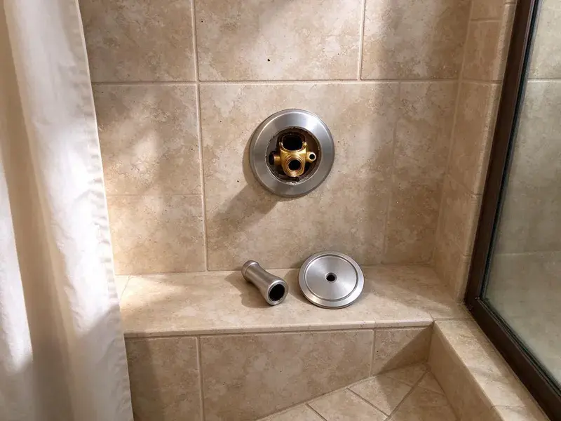

Urinal Installation in Kodiak, AK
From office restrooms to garage man caves, we install urinals across Kodiak, AK with proper carriers, flush valves and drains.
- ADA Height Installations
- Local Kodiak pros
- Fast, reliable service
- Upfront pricing
Need a new urinal installed fast and correctly in Kodiak, AK?
Contact CKN Plumbing today for a free estimate on your urinal installation job.
Your First Call for Urinal Installation in Kodiak, AK
When it comes to urinal installation in Kodiak, AK, CKN Plumbing is the trusted choice. We handle everything from selecting the right fixture to setting up proper water supply, drainage connections, and secure mounting for long-lasting performance.
Our expertise includes:
- Commercial grade urinal installs
- Rough in 2-inch waste lines with proper venting
- Proper water supply line setup

Additional Bathroom Plumbing Services in Kodiak, AK
From toilets to showers, our bathroom plumbing team in Kodiak, AK repairs, installs, and replaces every fixture with clean, code-compliant work.


Customers
Why Choose CKN Plumbing for Urinal Installation in Kodiak, AK?
A urinal that is not set at the right height or properly supported can leak at the wall and fail inspection. We install to code and manufacturer specs on every job.
- Durability, We use quality materials and secure mounting techniques for long-lasting, sturdy installations.
- Commercial Experience, We work with business owners, contractors and property managers.
- Code Compliance, We make sure all urinal installations meet Alaska plumbing codes for safety and function.
Citywide Coverage
No matter where you are in Kodiak, CKN Plumbing is your local expert for urinal installation. We understand the diverse plumbing setups throughout the area and are equipped to handle any project.
Experienced Team
Our plumbers have installed urinals from American Standard, Kohler, Toto, Sloan and Zurn. They know the rough-in dimensions and flush valve settings for each.
Safety-First Approach
Safety and code compliance are top priorities in every urinal installation project we undertake. We follow all local Kodiak and Alaska plumbing regulations, delivering a safe and reliable system.
Trusted Certified Kodiak Plumbing Services Professionals
At CKN Plumbing, we take pride in providing certified plumbing services throughout Kodiak, AK. Backed by recognized industry credentials, our experienced plumbers combine technical skill with genuine customer care. Whether it is repair, installation, or maintenance, we follow strict safety and quality standards to deliver lasting results you can trust.
Call Us Now PHCC Plumbing Contractor Recognition
PHCC Plumbing Contractor Recognition Better Business Bureau (BBB) Accreditation
Better Business Bureau (BBB) Accreditation Angi Certified Pro
Angi Certified Pro ISO 9001 Quality Management Certification
ISO 9001 Quality Management CertificationExpert Urinal Installation Services in Kodiak, AK
ADA Urinal Installation in Kodiak
Accessible urinals must have the rim no higher than 17 inches above the floor and enough clear floor space in front. We set the carrier and fixture to meet these rules and place the flush control within reach. This is essential for public restrooms and new construction. We review the layout before setting the fixture.

Urinal Replacement and Upgrades in Kodiak, AK
Older urinals often use 1 gallon or more per flush and have cracked or stained bowls. We remove the old fixture, inspect the waste outlet and carrier, and install a modern low-flow model. Sometimes the old carrier can be reused, which reduces cost. Upgrading also improves restroom appearance and odor control.
Waterless Urinal Installation in Kodiak
Waterless urinals are an smart choice for businesses and institutions in Kodiak looking to conserve water and reduce utility bills. CKN Plumbing is proficient in the installation of various waterless urinal brands, ensuring proper sealant cartridge setup and drain line connection. These systems require precise installation to prevent odors and maintain hygiene, which our experts handle with care.
Sloan Urinal System Installation in Kodiak, AK
Sloan is a leading brand in commercial plumbing, known for its durable and reliable urinal flushometers and fixtures. CKN Plumbing specializes in Sloan urinal system installation in Kodiak, AK. Our plumbers are familiar with Sloan's specific requirements, including sensor-activated flush valves and complex water supply connections. We ensure that your Sloan system is installed correctly for strong performance and a long service life, which is crucial in high-traffic environments.
Urinal Installation Cost Factors in Kodiak, AK
Costs depend on the fixture type, whether a carrier is needed, and how far the drain and supply must run. Sensor valves cost more than manual valves, and waterless urinals have higher upfront prices but save water over time. Replacements using existing lines are the least expensive. We provide a detailed quote that shows each cost.
Flushometer Urinal Installation in Kodiak
Manual flushometer urinals are the standard in many commercial restrooms. We install Sloan Royal or Zurn flush valves with the correct gallons-per-flush rating, typically 0.125 to 0.5 gpf. Each valve includes a vacuum breaker and stop. We adjust the flush to clear the bowl without wasting water.
ADA-Compliant Urinal Installation in Kodiak
Meeting ADA (Americans with Disabilities Act) guidelines is essential for public and commercial restrooms. CKN Plumbing specializes in ADA-compliant urinal installations in Kodiak, ensuring proper height, clear floor space, and grab bar placement where required. Our attention to detail helps businesses provide accessible facilities while adhering to all necessary regulations.

Drainage & Venting for Urinals in Kodiak, AK
Correct drainage and venting are critical for any urinal installation to prevent clogs, odors, and slow draining. CKN Plumbing makes sure that all urinal installations in Kodiak, AK have properly sized and sloped drain lines, as well as adequate vent connections to the main plumbing stack. This meticulous approach supports strong performance and long-term reliability of your new urinal system.
Local Urinal Installation Near Me in Kodiak, AK
When you search for 'urinal installation near me' in Kodiak, AK, CKN Plumbing is your trusted local partner. Our team is strategically located to provide prompt and efficient service throughout the entire Kodiak area. We understand the urgency of commercial plumbing needs and aim to respond quickly.
Our crews know local permit processes and inspection expectations for commercial restrooms. That speeds up approval for new fixtures and remodels. You get one team for planning, installation and final testing.
CKN Plumbing at a Glance
- Fully licensed plumbing team covering Kodiak, AK
- 24/7 emergency service with same-day scheduling
- Upfront, flat-rate pricing before work begins
- 4.9-star rated by 309+ Alaska customers
Kodiak Map
Kodiak Information
- Population
- 5,354
- Area codes
- Local
- Service area
- Kodiak and communities within 40 miles
- Nearby
- Homer, Kalifornsky, Kenai, Sterling
For properties in Kodiak, AK, proper urinal installation is essential to handle local water quality and ensure long-term, leak-free operation in both commercial and residential settings.
Expert Services
Trust our professionals for reliable CKN Plumbing solutions in Kodiak, AK.
Our Specialized Plumbing Services in Kodiak, AK
At CKN Plumbing, we provide a complete range of plumbing services across Kodiak, AK. From leak detection to full system installations, our team ensures fast, precise, and affordable service for both residential and commercial properties. Explore our core services below:


How Our Urinal Installation Service Works in Kodiak, AK
Here is how we take your project from quote to a finished fixture.
Request a Quote
Start by calling (928) 470-9007 or filling out our online form to discuss your urinal installation needs. We'll gather details about your project and schedule a good time for an assessment.
On-Site Assessment
A CKN Plumbing plumber will visit your Kodiak property to evaluate the installation site, assess existing plumbing, and confirm the best approach. We'll provide a detailed, transparent quote.
Professional Installation
Our experienced technicians will proceed with the urinal installation, ensuring all water lines, drain connections, and mounting hardware are correctly installed and tested. We prioritize cleanliness and efficiency.
Frequently Asked Questions About Urinal Installation in Kodiak
The cost of urinal installation in Kodiak, AK can range from $400 to $1,500, depending on the type of urinal (flush vs. waterless), complexity of plumbing modifications, and labor. Commercial installations with more extensive work might be at the upper end. We provide a written estimate after an on-site assessment.
A replacement takes two to four hours. A new install with rough-in and carrier typically takes one to two days, plus inspection time.
Signs that your existing urinal might need replacement include frequent clogs, persistent odors despite cleaning, visible cracks or extensive staining, or if it's an older, inefficient model that uses excessive water. Our technicians can assess its condition and advise on repair versus replacement.
Flush urinals use a water flush to remove waste, while waterless urinals use a specialized trap system with a sealant liquid to prevent odors without water. Waterless urinals offer significant water savings but require specific maintenance for their sealant cartridges. Both types offer effective waste removal.
For most commercial urinal installations, especially new constructions or significant renovations, a plumbing permit from the Kodiak building department is usually required. For residential replacements, it might not be necessary, but it's always best to check with local Kodiak, AK authorities or consult with our team.
We guarantee our installation labor, and fixtures and flush valves carry manufacturer warranties, often several years on flushometer parts.
New urinals and restroom changes usually require a plumbing permit. Simple like-for-like replacements usually do not, and we will confirm with your local building department.
CKN Plumbing stands behind our work with a comprehensive warranty on all urinal installations. This covers our labor and craftsmanship for a specified period, giving you peace of mind. Specific warranty details will be provided with your service agreement.
What People Are Saying About Our Plumbing Experts?

Robert G.
The trenchless sewer replacement saved our front yard. They walked us through the camera inspection footage first so we knew exactly what we were paying for.
Sewer Line Replacement · Anchorage, AK
Mark T.
When our office needed drain cleaning, CKN Plumbing provided quick, reliable service. The plumber arrived on time and made sure every drain flowed perfectly before leaving. Very satisfied.
Drain Cleaning · Kalifornsky, AK
Laura S.
I scheduled a water heater replacement, and the team made the process smooth and affordable. The new unit works perfectly, and they cleaned up after completing the job.
Water Heater Replacement · Homer, AK
Patricia H.
We had a slab leak that two other companies could not find. CKN Plumbing located it in under an hour, explained our options, and the price matched the quote to the dollar.
Slab Leak Repair · Sterling, AKJames P.
Our commercial plumbing system had a leak under the sink, and CKN Plumbing handled it professionally. The plumbers arrived quickly and restored everything without disruption to our customers.
Commercial Plumbing · Sterling, AKSofia M.
Two new toilets installed in one visit, no mess left behind, and the tech even adjusted a faucet he noticed was dripping. Fair pricing and really friendly.
Toilet Installation · Homer, AK